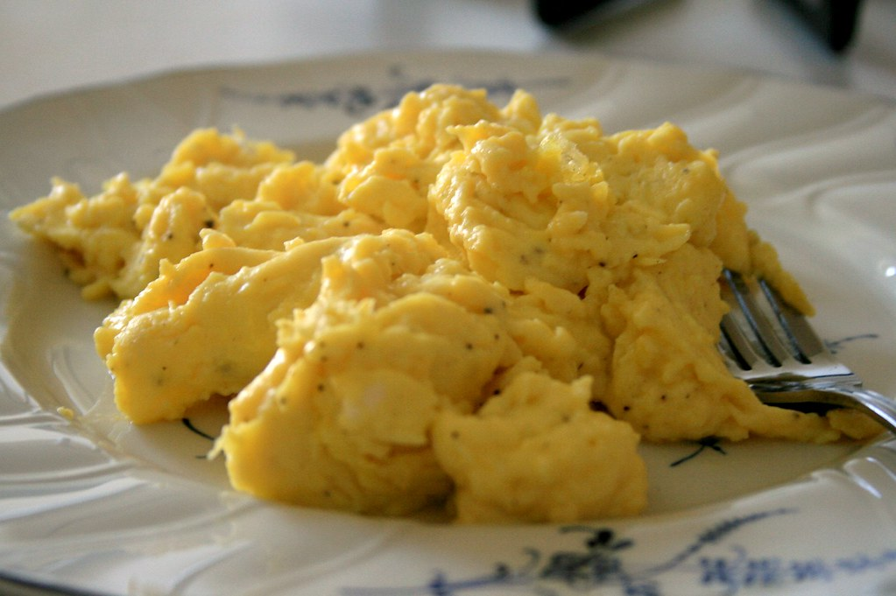

Scrambled eggs are a simple, classic breakfast dish made by gently cooking beaten eggs while stirring them to create soft, fluffy curds. They can be rich and creamy or light and fluffy depending on the cooking method. Scrambled eggs are quick to prepare, highly customizable, and pair well with toast, vegetables, cheese, herbs, or breakfast meats.
Make a complete breakfast dish with other foods such as rice or Portuguese sausage!